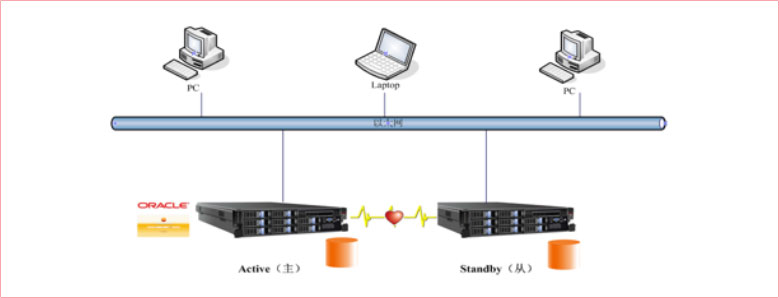

油库地理上遍布全国各地，其中大部分在五级地市以下。机房环境差，且没有专业技术人员支持，双机方案很好的解决非专业人员应用状况，有效提高系统稳定性
该方案由联想双机高可用解决方案结合联想业界最完善的服务体系，专门为用户制定的完善的项目实施方案。
一台主机为工作机(Primary Server)，另一台主机为备份机(Standy Server)，在系统正常情况下，工作机为信息系统提供支持，备份机监视工作机的运行情况(工作机也同时监视备份机是否正常)。当工作机出现异常，不能支持信息系统运营时，备份机主动接管(Take Over)工作机的工作，继续支持信息的运营，从而保证信息系统能够不间断的运行(Non-Stop)。
联想牵头组织项目管理经理（联想服务）、客户（运维方）、油库管理系统开发商、数据库厂商，通过对项目实施细节的详细探讨，就实施过程中所需要各方进行配合的内容进行梳理，最终形成实施手册；同时，组织各方技术人员在联想售前实验室针对实施手册进行了多次实际演练，测算出每一个库点实施所需的准确时间。在此基础上，联想启用覆盖全国范围的服务网点，按照经过多方确认的实施手册开展多区域同步项目实施。
联想提供的双机解决方案有效解决了油库单点故障的隐患，保证了油库信息管理系统的业务连续性，并且依托于联想强大的服务能力，保证了遍布于全国295个地点的油库管理信息系统的顺利实施上线。